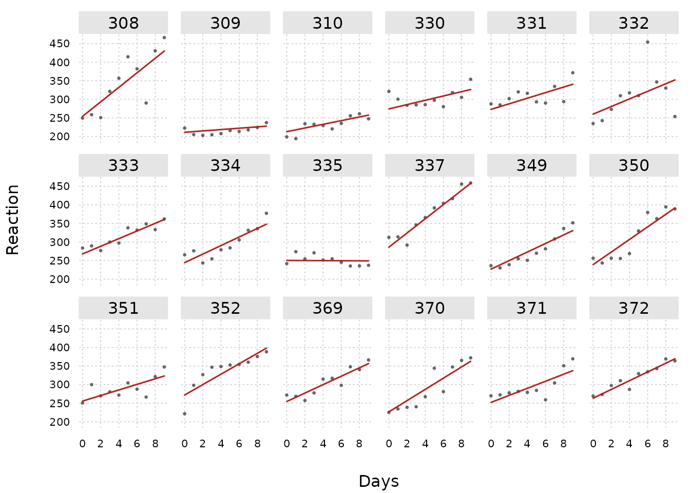
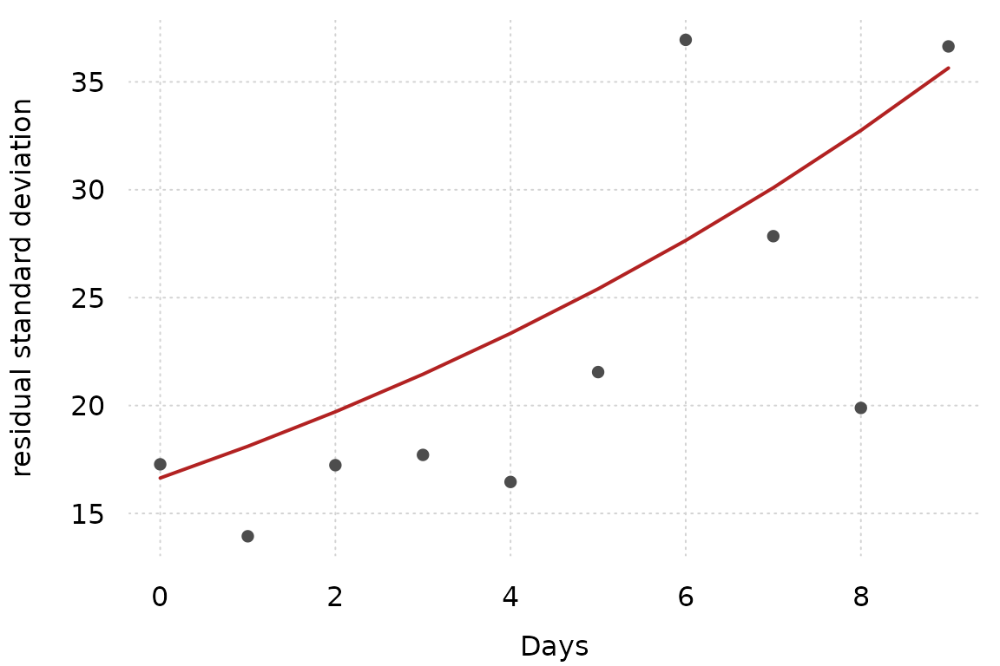

frmtmb fits regression models written in the brms formula grammar by maximum likelihood, with the Laplace approximation for random effects. The backend is RTMB: the model formula compiles to an R objective function that is differentiated on the TMB AD tape. There is no MCMC and no compilation at run time.
A mixed model
data(sleepstudy, package = "lme4")
fit <- frm(bf(Reaction ~ Days + (Days | Subject)), family = gaussian(),
data = sleepstudy)
summary(fit)
#> Family: gaussian
#> Formula: Reaction ~ Days + (Days | Subject)
#> Method: ML nobs: 180
#> Groups: Subject, 18
#> logLik: -875.97 AIC: 1763.94 BIC: 1783.1
#>
#> Random effects:
#> Days | Subject
#> Name Std.Dev. (Intercept)
#> (Intercept) 23.7800
#> Days 5.7168 0.0813
#>
#> Coefficients (mu):
#> Estimate Std. Error z value Pr(>|z|)
#> (Intercept) 251.4052 6.6323 37.9064 < 2.2e-16
#> Days 10.4673 1.5022 6.9678 3.22e-12
#>
#> Coefficients (sigma):
#> Estimate Std. Error z value Pr(>|z|)
#> (Intercept) 3.242273 0.058926 55.023 < 2.2e-16The usual methods work: fixef(), ranef(),
VarCorr(), predict() (with
newdata, se.fit, and re.form),
confint() (Wald, profile, or likelihood-root),
simulate(), anova() for likelihood-ratio
tests, and emmeans for marginal means.
fitted() gives the fit its own picture. One panel per
subject shows what the random slopes bought: the lines share a
population trend, but each subject keeps its own intercept and its own
slope.
sleepstudy$yhat <- fitted(fit)
tinyplot::tinyplot(Reaction ~ Days, data = sleepstudy, facet = ~Subject,
type = "p", pch = 16, cex = 0.7, col = "gray40",
theme = "clean2", facet.args = list(nrow = 3))
tinyplot::plt_add(yhat ~ Days, data = sleepstudy, facet = ~Subject,
type = "l", col = "firebrick", lwd = 1.5)
The figures on this page use tinyplot, which is a suggested package. They are skipped when it is not installed.
Distributional regression
Every distributional parameter can get its own formula with the full predictor grammar, including random effects and smooths:
fit2 <- frm(bf(Reaction ~ Days + (Days | Subject),
sigma ~ Days), family = gaussian(),
data = sleepstudy)
fixef(fit2)$sigma
#> (Intercept) Days
#> 2.81184862 0.08463401The coefficient on Days is positive, so the model says
that reaction times scatter more widely late in the study. Compare the
fitted residual standard deviation with the standard deviation of the
residuals on each day.
day_sd <- as.numeric(tapply(residuals(fit2), sleepstudy$Days, sd))
sig <- as.numeric(predict(fit2, dpar = "sigma", type = "response",
newdata = data.frame(Days = 0:9,
Subject = "308")))
tinyplot::tinyplot(x = 0:9, y = day_sd, type = "p", pch = 16,
col = "gray30", theme = "clean2", xlab = "Days",
ylab = "residual standard deviation",
ylim = range(c(day_sd, sig)))
tinyplot::plt_add(x = 0:9, y = sig, type = "l", col = "firebrick",
lwd = 2)
The daily standard deviations are noisy, because each one comes from 18 observations. The trend they show is the trend the model fits.
Nonlinear formulas
With nl = TRUE the model formula is an arbitrary R
expression over named parameters, each of which has its own linear
predictor:
set.seed(1)
d <- data.frame(x = runif(200, 0, 5))
d$y <- 2.5 * exp(-0.7 * d$x) + rnorm(200, 0, 0.15)
nlfit <- frm(bf(y ~ a * exp(-b * x), a ~ 1, b ~ 1, nl = TRUE) +
gaussian(),
data = d, start = list(beta = c(1, 0.3)))
unlist(fixef(nlfit)[c("a", "b")])
#> a.(Intercept) b.(Intercept)
#> 2.5067769 0.7022003Custom families
A family is a plain R function returning an AD-safe log-density; no Stan or C++ involved:
my_poisson <- custom_family(
"my_poisson", dpars = "mu", links = list(mu = "log"),
lpdf = function(y, dpars, aterms) {
y * log(dpars$mu) - dpars$mu - lgamma(y + 1)
}
)
check_custom_family(my_poisson, y = rpois(50, 3),
dpars = list(mu = rep(2.5, 50)))Smooths and Gaussian processes
mgcv smooths and gp() terms work in any linear
predictor; their smoothing and kernel parameters are estimated as
variance components. gp() takes up to three variables
(separate lengthscales per dimension; iso = TRUE shares
one). The exact form predicts at new positions by kriging; the
Hilbert-space form (k =) interpolates through its basis,
capped at k^D <= 1000 columns. The Hilbert-space form
uses brms’s input convention: the coordinates are divided by their
largest pairwise distance, so the boundary factor c = (1.25
by default, one value per variable) means the same thing here as in
brms. Reported lengthscales stay in data units.
Spatial Gaussian Markov random fields
car() fits a conditional autoregressive field over an
adjacency matrix, with brms’s spelling and all four of its types.
M is a symmetric binary adjacency matrix whose dimnames
name the locations, gr is the grouping variable that maps
observations onto them, and type is one of
"escar" (the proper CAR, default), "icar" and
its alias "esicar" (intrinsic), or "bym2" (the
scaled mixture of a spatial and an unstructured part).
sd(car) is the field scale; escar and
bym2 add a mixing parameter on (0, 1),
reported by confint_varcorr() under brms’s names
car and rhocar.
set.seed(4)
grid <- expand.grid(r = 1:5, c = 1:5)
nloc <- nrow(grid)
W <- matrix(0, nloc, nloc)
for (i in seq_len(nloc)) {
for (j in seq_len(nloc)) {
if (abs(grid$r[i] - grid$r[j]) + abs(grid$c[i] - grid$c[j]) == 1) {
W[i, j] <- 1
}
}
}
dimnames(W) <- list(paste0("L", 1:nloc), paste0("L", 1:nloc))
phi <- 0.7 * as.numeric(scale(grid$r + grid$c)) + 0.7 * rnorm(nloc)
dc <- data.frame(loc = factor(rep(rownames(W), each = 8),
levels = rownames(W)))
dc$y <- 1 + phi[as.integer(dc$loc)] + rnorm(nrow(dc), 0, 0.5)
fc <- frm(bf(y ~ car(W, gr = loc, type = "escar")), family = gaussian(),
data = dc)
confint_varcorr(fc)
#> block term type estimate lwr upr
#> 1 car(W, gr = loc, type = "escar") sd(car) sd 1.111466 0.8096418 1.5258056
#> 2 car(W, gr = loc, type = "escar") car prop 0.951133 0.5172424 0.9971797An intrinsic CAR is improper - the field is identified only up to a
constant per connected component - so icar,
esicar and bym2 add brms’s soft sum-to-zero
constraint, whose scale is con_sd (brms’s 1e-3
by default, relative to the field’s own sd). Tightening it walks the fit
onto the exactly constrained likelihood; the default is already four
orders below the standard error of sd(car).
spde() fits a Matern field over a finite-element mesh:
it takes the mesh’s three matrices (fmesher::fm_fem()’s
c0/g1/g2, or INLA’s
M0/M1/M2) as fixed data and
estimates Q = tau^2 (kappa^4 M0 + 2 kappa^2 M1 + M2). Mesh
construction stays outside the package. confint_varcorr()
reports the marginal sd and the range under the planar
alpha = 2 identities.
gr maps observations onto mesh nodes, and it does so by
row number: the value of gr for an
observation is the row of M0 that holds its node. The
finite-element matrices carry no dimnames, so nothing else can reconcile
a set of labels with them - a label ordering would be a guess, and a
wrong guess permutes the field against its own precision and still
converges. Give gr whole numbers in
1..nrow(M0), as an integer or numeric column, a character
column of those numbers, or a factor whose levels are those numbers;
every one of those spellings is the same model. Any other labeling is an
error. Not every node has to be observed: a node no row visits keeps its
column and its prior, so the field is still smoothed across it.
# node holds the mesh row of each observation, 1..nrow(fem$c0)
frm(bf(y ~ x + spde(fmesher::fm_fem(mesh), gr = node)), family = gaussian(),
data = d)Because gr is one node per observation, the mesh has to
place every observation on a node. A general projector matrix, which
spreads an observation over the vertices of the triangle it falls in, is
not supported yet.
Special terms
mo() fits monotonic effects of ordinal predictors,
mi() imputes missing continuous predictors inside the model
(with mi(sdx) for known measurement error), and
se() gives meta-analysis:
set.seed(3)
dm <- data.frame(inc = sample(0:3, 300, TRUE), z = rnorm(300))
dm$y <- 1 + c(0, 1, 1.6, 2)[dm$inc + 1] + 0.3 * dm$z + rnorm(300)
fmo <- frm(bf(y ~ mo(inc) + z), family = gaussian(), data = dm)
predict(fmo, newdata = data.frame(inc = 0:3, z = 0))
#> 1 2 3 4
#> 0.9227861 1.8599425 2.5575740 2.9094146Mixtures
Finite mixtures keep per-component parameters and covariate-dependent
mixing weights; groups = ~g moves the class draw to the
group level (latent classes, combinable with random effects):
set.seed(4)
g <- rep(1:40, each = 5)
cl <- rbinom(40, 1, 0.4)
dmix <- data.frame(y = rnorm(200, c(-1, 2)[cl + 1][g], 0.8),
g = factor(g))
fmix <- frm(bf(y ~ 1) + mixture(gaussian(), gaussian(), groups = ~g),
data = dmix)
head(mixture_probs(fmix), 3)
#> class1 class2
#> 1 1 3.936344e-08
#> 2 1 1.174035e-12
#> 3 1 1.276275e-16Inference beyond Wald
hypothesis() tests arbitrary parameter expressions
(Wald, profile, or parametric bootstrap), with natural-scale
random-effect names:
hypothesis(fit, "sd_Subject__Days^2 / (sd_Subject__Days^2 + sigma^2)")
#> Hypothesis tests (method = wald)
#> hypothesis estimate se lwr
#> sd_Subject__Days^2 / (sd_Subject__Days^2 + sigma^2) 0.04753 0.01989 0.008539
#> upr z p
#> 0.08652 2.389 0.01688frm_bootstrap() runs a warm-started parametric
bootstrap, and confint(fit, method = "profile") profiles
single parameters.
Simulating from a design
frm_simulate() builds a design from a formula and data,
sets the parameters, and simulates responses - no fit needed. This is
the power analysis loop: simulate, refit, count. Parameters take the
same names hypothesis() and variables() use,
on their natural scales (coefficients on the link scale,
sigma as a residual SD,
sd_<group>__<term> as a standard
deviation):
set.seed(1)
dd <- data.frame(x = rnorm(120), g = factor(rep(1:12, 10)), y = 0)
form <- bf(y ~ x + (1 | g)) + gaussian()
sims <- frm_simulate(form, dd, nsim = 3, seed = 1,
newparams = list(Intercept = 1, x = 0.5,
sigma = 0.6,
sd_g__Intercept = 0.7))
str(sims, max.level = 0)
#> 'data.frame': 120 obs. of 3 variables:Give prior instead and every simulation draws its own
parameter vector first - the analog of brms’s
sample_prior = "only" followed by
posterior_predict(). The drawn parameters come back as an
attribute, so a prior-predictive check can relate parameters to
outcomes:
pp <- frm_simulate(form, dd, nsim = 50, seed = 2,
prior = set_prior("normal(0, 1)", class = "b") +
set_prior("normal(0, 2)", class = "Intercept") +
set_prior("exponential(1)", class = "sd") +
set_prior("normal(0, 1)", class = "Intercept",
dpar = "sigma"))
pars <- attr(pp, "pars")
head(pars, 3)
#> x Intercept sd_g__Intercept sigma_Intercept
#> 1 -0.8969145 0.36969837 0.08952618 0.96788388
#> 2 -0.5431617 -0.03157483 1.43689377 1.89509840
#> 3 0.6668503 1.54729045 1.12473222 -0.03551988
# does the prior imply plausible data? slope against outcome spread
plot(pars$x, apply(pp, 2, sd), xlab = "slope", ylab = "sd(y)")Every coefficient and every random-effect SD needs a value from
newparams or a prior; leaving one out is an error rather
than a silent zero effect.
Diagnostics
diagnose(fit) reports convergence forensics.
Simulation-based residuals come through DHARMa, predictive checks
through pp_check(), and effect displays through
conditional_effects():
plot(dharma_residuals(fit))
plot(conditional_effects(fit))And the fitted objective can be handed to NUTS for full Bayes on the
same model - frm_sample() returns draws with the full
method surface (posterior_epred(),
hypothesis(), pp_check()), and
check_laplace() audits the Laplace approximation against
them:
ds <- frm_sample(fit, chains = 4)
check_laplace(fit)See vignette("inputs") for what frm()
accepts and what it costs to run,
vignette("brms-migration") for the brms feature map, and
vignette("diagnostics") for the model-checking
workflow.